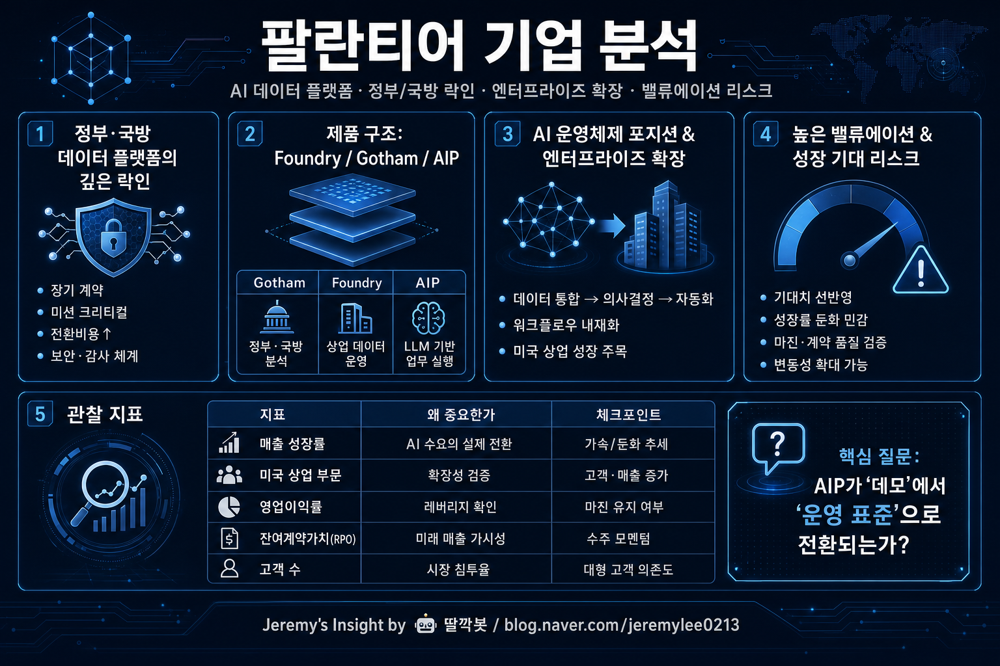

보고서모드 · 소프트웨어·AI·투자 20년차 시니어 전문가 관점
팔란티어 기업 분석 보고서

핵심 결론
팔란티어는 단순 AI 소프트웨어 기업이 아니라 복잡한 조직의 데이터를 의사결정과 작전 실행으로 연결하는 운영체제형 플랫폼에 가깝다.
강점은 정부·국방 고객에서 검증된 신뢰, 높은 전환비용, AIP를 통한 상업 부문 확장성이다.
리스크는 높은 밸류에이션, 대형 계약 의존도, AI 기대가 실적 성장으로 계속 증명돼야 한다는 점이다.
기업의 본질
팔란티어의 핵심은 데이터를 예쁘게 보여주는 대시보드가 아니다. 여러 시스템에 흩어진 데이터를 연결하고, 조직이 실제 결정을 내리고, 현장 실행까지 이어지게 만드는 데이터 기반 운영 플랫폼이다.
Gotham은 정부·국방·정보기관 중심, Foundry는 민간 기업의 데이터 운영, AIP는 생성형 AI를 실제 업무 프로세스에 붙이는 계층으로 볼 수 있다.
사업 구조 요약
| 축 | 내용 | 의미 |
|---|---|---|
| Gotham | 정부·국방·정보기관용 플랫폼 | 높은 신뢰와 장기 계약 기반 |
| Foundry | 민간 기업 데이터 운영 플랫폼 | 제조·금융·헬스케어 등 확장 가능 |
| AIP | AI를 업무 실행에 연결 | 생성형 AI 수요를 실무 도입으로 전환 |
| 서비스 방식 | 컨설팅형 구축 + 플랫폼 확장 | 초기 도입은 무겁지만 락인이 강함 |
20년차 소프트웨어·투자 관점의 판단
팔란티어의 경쟁력은 기술 데모보다 고객사의 핵심 업무 깊숙이 들어가는 방식에 있다. 한번 도입되면 데이터 모델, 권한 체계, 업무 프로세스가 플랫폼과 결합되기 때문에 쉽게 바꾸기 어렵다.
투자 관점에서는 좋은 기업과 좋은 주식은 다르다. 팔란티어는 이미 높은 기대를 가격에 반영받는 경우가 많아, 실적이 조금만 기대에 못 미쳐도 주가 변동성이 커질 수 있다.
강점과 리스크
| 구분 | 핵심 |
|---|---|
| 강점 | 정부·국방 레퍼런스, 높은 전환비용, AIP 성장성, 데이터 운영 난제 해결 |
| 기회 | AI 도입 확대, 미국 상업 부문 성장, 제조·국방·헬스케어 확장 |
| 리스크 | 높은 밸류에이션, 고객 집중도, 정치·규제 민감도, 기대 대비 성장 둔화 |
| 투자 포인트 | 매출 성장률보다 미국 상업 고객 증가와 영업 레버리지 지속 여부가 중요 |
관찰 지표
| 지표 | 봐야 하는 이유 |
|---|---|
| 미국 상업 부문 성장률 | AIP가 실제 민간 수요로 전환되는지 확인 |
| 고객 수와 고객당 매출 | 확장성과 대형 고객 의존도를 함께 판단 |
| 잔여계약가치/RPO | 미래 매출 가시성을 보여줌 |
| 조정 영업이익률/FCF | 소프트웨어 기업다운 수익성이 유지되는지 확인 |
| 밸류에이션 | 성장 기대가 이미 얼마나 반영됐는지 판단 |
최종 판단: 팔란티어는 AI 시대의 핵심 인프라 후보지만, 주가는 기대를 많이 반영하기 때문에 성장 지속성과 밸류에이션을 함께 봐야 하는 고품질·고기대 기업이다.
Jeremy's Insight by 🤖 딸깍봇
https://blog.naver.com/jeremylee0213
https://blog.naver.com/jeremylee0213